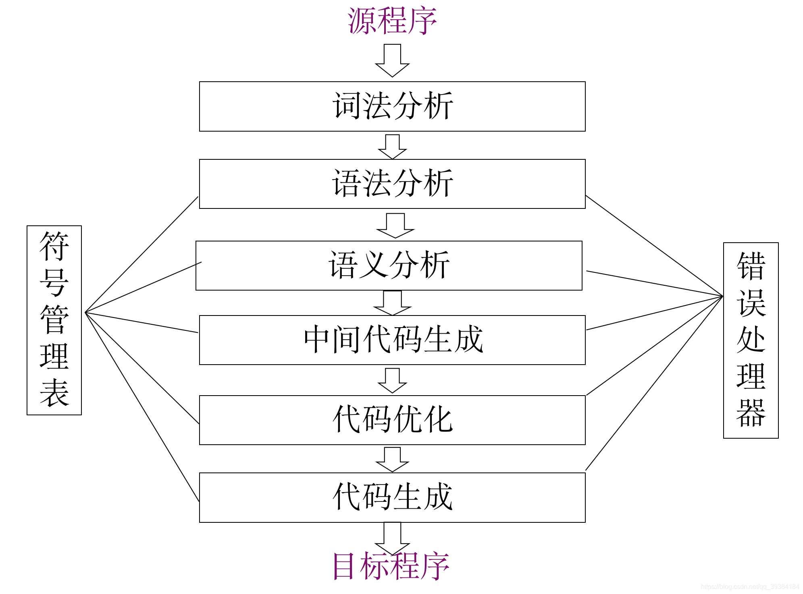
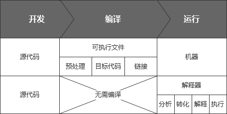
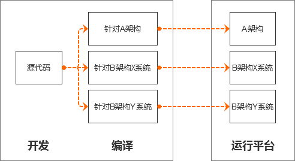

编译过程

每个阶段将源程序从一种表示转换成另一种表示。 随着编译器各个阶段的进展，源程序的内部表示不断地发生变化。
- 词法分析器：字符流->单词流
- 语法分析器：单词流->语法树
- 语义分析器：
- 收集标识符的属性信息:
- 类型(Type)
- 种属(Kind)
- 存储位置、长度
- 值
- 作用域
- 参数和返回值信息
- 语义检查:
- 变量或过程未经声明就使用
- 变量或过程名重复声明
- 运算分量类型不匹配
- 操作符与操作数之间的类型不匹配
- 收集标识符的属性信息:
- 中间代码生成器：抽象语法树->中间表示（与平台无关的抽象程序/字节码）：
- 易于产生
- 易于翻译成目标程序
- 三地址码：temp1=c*d；temp2=b+temp1；a=temp2
- 四元式：（op, arg1, arg2, result）；(* , c , d , temp1)；(+ , b, temp1 , temp2)；(= , temp2 , - , a)
- 代码优化器：试图改进中间代码，以产生执行速度较快的机器代码：
- temp1=c*d；temp2=b+temp1；a=temp2
- change to：temp1=c*d；a=b+temp1
- 代码生成器：生成可重定位的机器代码或汇编代码/机器码：
- temp1=c*d；a=b+temp1
- change to：Mov R2，c；Mul R2, d；Mov R1, b；Add R2, R1；Mov a, R2
- 一个重要任务是为程序中使用的变量合理分配寄存器
- 符号管理表：
- 基本功能是记录源程序中使用的标识符，
- 并收集与每个标识符相关的各种属性信息，
- 并将它们记载到符号表中。
- 错误处理器：
- 处理方式：报告错误，应继续编译
- 大部分错误在语法分析、语义分析阶段检测出来
- 词法分析：字符无法构成合法单词
- 语法分析：单词流违反语法结构规则
- 语义分析：语法结构正确，但无实际意义
编译型语言和解释型语言
编译型语言的可执行程序产生的是直接执行机器指令（机器码）。
解释型语言的每一句源代码都要经过解释器解释先解释为字节码，再解释为可以执行的机器指令，相比之下解释型语言的执行效率会低一些。

跨平台

1.不同CPU架构（例如X86、ARM等）的机器
或
2.同种CPU但不同的操作系统（例如Unix、Windows等）的机器。
字节码与机器吗
机器码
是电脑CPU直接读取运行的机器码，运行速度最快，但是非常晦涩难懂，同时也比较难编写；机器码就是计算机可以直接执行，并且执行速度最快的代码；
用机器语言编写程序，编程人员要首先熟记所用计算机的全部指令代码和代码的涵义。手编程序时，程序员得自己处理每条指令和每一数据的存储分配和输入输出，还得记住编程过程中每步所使用的工作单元处在何种状态。这是一件十分繁琐的工作，编写程序花费的时间往往是实际运行时间的几十倍或几百倍。而且，编出的程序全是些0和1的指令代码，直观性差，还容易出错。现在，除了计算机生产厂家的专业人员外，绝大多数的程序员已经不再去学习机器语言了。
- 机器语言是微处理器理解和使用的，用于控制它的操作二进制代码。
- 8086到Pentium的机器语言指令长度可以从1字节到13字节。
- 尽管机器语言好像是很复杂的，然而它是有规律的。
- 存在着多至100000种机器语言的指令。这意味着不能把这些种类全部列出来。
字节码
字节码是一种中间状态的（中间码）的二进制代码（文件），字节码（Bytecode）是一种包含执行程序、由一序列 op 代码/数据对 组成的二进制文件。需要直译器转译后才能成为机器码；字节码通常情况下它是已经经过编译，但与特定机器码无关。字节码通常不像源码一样可以让人阅读，而是编码后的数值常量，引用，指令等构成的序列。字节码与特定的硬件环境无关；字节码的实现方式是通过编译器和虚拟机器。编译器将源码编译成字节码，特定平台上的虚拟机器将字节码转译为可以直接执行的指令。字节码的典型应用为Java bytecode
对比字节码与机器码
机器码就是说计算机能读懂的代码,简单点说就是给计算机执行的二进制代码。 字节码,是JAVA语言专有的,它是让JVM来执行的二进制代码。 虽然都是二进制代码,但是由于执行它的环境不一样,所以它们存在一些指令集上的区别。
一，机器码，完全依附硬件而存在～并且不同硬件由于内嵌指令集不同，即使相同的0 1代码 意思也可能是不同的～换句话说，根本不存在跨平台性～比如～不同型号的CPU,你给他个指令10001101，他们可能会解析为不同的结果。
二，我们知道JAVA是跨平台的，为什么呢？因为他有一个jvm,不论那种硬件，只要你装有jvm,那么他就认识这个JAVA字节码～～～～至于底层的机器码，咱不用管，有jvm搞定，他会把字节码再翻译成所在机器认识的机器码～～～
JIT
JIT即时编译器（Just-In-Time Compiler）。
无论是使用解释器进行解释执行，还是使用编译器进行编译后执行，最终源代码都需要被转换为对应平台的本地机器指令。
那么，一些重复出现的代码，就可以将其编译为本地机器指令，重复使用，从而提高效率。
这些重复出现的代码包括多次调用的方法和多次执行的循环体。
JIT即时编译器比较典型的例子是在JVM（Java虚拟机）中。